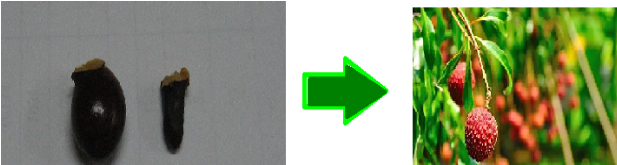

HOW TO GROW LYCHEE TREE FROM SEED

STEP 1: Soak the Seed
- Fill a cup or bowl with room-temperature water and submerge the lychee seed completely. Allow it to soak for 3 days. This step helps to crack the brownish husk and increases the chance of germination.
STEP 2 :Monitor and Change Water
- After 3 days, check the seed for signs of cracking or sprouting. If not yet sprouted, change the water and continue soaking for another 3-5 days.
STEP 3: Provide Warmth and Light
- Once the seed has cracked and sprouted, move it to a warm location with indirect light, such as a sunny windowsill or under grow lights. Maintain a consistent temperature between 64°F to 75°F (18°C to 24°C).
STEP 4: Transplant
- After 1-2 months, when the seedling has 2-3 sets of leaves, transplant it into a well-draining potting mix with a container at least 6-8 inches deep. Water thoroughly and reduce watering frequency as the soil dries slightly between waterings
STEP 5: Pruning
- Prune the seedling to encourage a strong, single leader and a balanced root system. Remove any weak or spindly growth, and trim the top of the seedling to about 6 inches (15 cm) from the soil surface.
STEP 6: Fertilization
- Feed the seedling with a balanced, water-soluble fertilizer (20-20-20) at half the recommended strength. Repeat every 2-3 months until the tree is about 1 year old
STEP 7: Patience
- Lychee trees grown from seed can take 3-5 years to produce flowers and 10 years or more to bear fruit. Be patient and provide optimal growing conditions, including a subtropical climate with at least 100 chill hours, for the best chance of success.
Important NOTE
- Lychee trees might produce fruit in five years, ten years, or sometimes two decades. The seed and soil quality, rainfall, and amount of sunlight will all affect this timing. Pick lychees with dark red skin; ripe lychee is ready when it’s about the size of a golf ball. You can pick the fruit year-round, and the white flesh should be squishy and sweet when the fruit has ripened
By following these steps, you should be able to successfully grow a litchi plant from seed. Good luck!